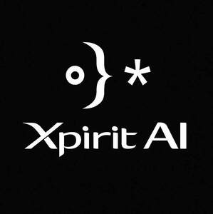

Trade Mark Journal No.2026/006 6 February 2026
UK00004295782 17 November 2025 (9,35,42)

- Class 9
- Artificial intelligence software; Artificial intelligence apparatus; Artificial intelligence software for surveillance; Artificial intelligence software for analysis; Artificial intelligence software for vehicles; Artificial intelligence software for healthcare; Humanoid robots with artificial intelligence for use in scientific research; Artificial intelligence and machine learning software; Humanoid robots with artificial intelligence for preparing beverages; Artificial intelligence software for driverless cars; Interactive software based on artificial intelligence; Software for the integration of artificial intelligence and machine learning in the field of Big Data; Humanoid robots with artificial intelligence for use in household cleaning and laundry.
- Class 35
- Outsourcing services in the field of business analytics; Business marketing services; Commercial business management; Business management; Business management advice relating to manufacturing business; Business marketing consultancy; Outsourcing services in the field of business operations; Business process management; Business management assistance for industrial or commercial companies; Business auditing; Business management and enterprise organization consultancy; Consultancy regarding business organisation and business economics; Business management services; Business invoicing services; Help in the management of business affairs or commercial functions of an industrial or commercial enterprise; Business planning and business continuity consulting; Business consulting for enterprises; Business process management consultancy; Business networking; Business marketing consulting services; Business project management services; Business planning services for enterprises; Business process management and consulting; Business consultancy; Business management and consultancy; Business management consultancy; Business project management; Business networking services; Business strategy services; Assistance to commercial enterprises in the management of their business; Business management for shops; Commercial assistance in business management; Analysis of business management systems; Advisory services relating to business management and business operations; Business consulting; Business management and consulting; Business management consulting; Business management of airports; Business strategy development services; Business management analysis; Business analysis; Business management and consultancy services; Business management consultancy services; Business management advisory services relating to industrial enterprises; Efficiency (Business -) expert services; Business efficiency expert services; Business management organisation; Business analysis services; Business intelligence services; Business management and consulting services; Business management consulting services; Business management for a trade company and for a service company; Business management and organization consultancy; Business organization and operation consultancy; Business administration consultancy; Business management and organization consultancy services; Business process re-engineering; Business administration services; Business management of theaters; Operational business assistance to enterprises; Business management services relating to the development of businesses; Business brokerage services; Evaluations relating to business management in industrial enterprises; Business information for enterprises; Business consulting services for digital transformation; Consulting services in business organization and management; Business consultancy services for digital transformation; Business acquisitions; Business management services for footballers; Business organization consultancy; Business consultancy services; Business management of logistics for others; Computerised business promotion; Advice in the field of business management and marketing; Business administration and management; Business management and administration; Assistance to industrial or commercial enterprises in the running of their business; Business management services relating to electronic commerce; Business planning services; Business administration; Business organization and management consulting; Business management services relating to the acquisition of businesses; Business consulting services; Business management of entertainers; Business risk management services; Business efficiency studies; Business organisation and management consulting services; Outsourcing services [business assistance]; Providing business management and operational assistance to commercial businesses; Business analysis of markets; Business organisation and management consulting; Business management of restaurants; Assistance in franchised commercial business management; Business expertise; Business merger services; Business consultancy services relating to manufacturing; Business management advisory services relating to commercial enterprises; Business promotion services; Business research for new businesses; Business management planning; Business research services; Business appraisal services; Business management assistance; Assistance (Business management -); Assistance with business management; Business file management; Business promotion; Business management of hospitals; Business accounts management; Development of concepts for business economy; Business organization consulting; Business management and organisation consultancy services; Business organisation; Business management for freelance service providers; Business marketing consultation services; Business planning; Acquisitions (Business -) consulting services; Business introduction services; Business management assistance in the field of franchising; Computerised business management [for others]; Consultancy (Professional business -); Professional business consultancy; Management consulting; Marketing consulting; Business research consulting; Professional business consulting; Business relocation consulting; Business organisation consulting; Personnel management consulting; Consulting services relating to marketing; Career placement consulting services; Business management consultancy and advisory services; Consultancy and advisory services for business management; Business consultancy and advisory services; Business advisory and consultancy services; Direct marketing consulting; Tax preparation and consulting services; Business planning consultancy; Consultancy and advisory services in the field of business strategy; Consultancy and advisory services relating to business management; Consulting services in the field of Internet marketing; Assistance, advisory services and consultancy with regard to business planning; Assistance, advisory services and consultancy with regard to business management; Business consultancy (Professional -); Management consultancy services; Business management consulting services in the field of information technology; Marketing consultancy; Career planning consultancy; Professional business consultancy services; Business consulting services in the agriculture field; Professional consultancy relating to business management; Assistance, advisory services and consultancy with regard to business analysis; Consulting services relating to publicity; Corporate management consultancy services; Professional consultancy relating to marketing; Strategic business consultancy; Assistance, advisory services and consultancy with regard to business organization; Business consultancy to firms; Corporate management consultancy; Consultancy relating to business planning; Consultancy relating to business management; Personal management consultancy services; Consultancy and advisory services relating to personnel management; Consulting services in the field of development of advertising concepts; Advisory and consultancy services relating to import-export agencies; Business advice and consultancy relating to franchising; Employment consultancy; Business recruitment consultancy; Business appraisal consultancy; Consultancy relating to auditing; Business research and advisory services; Personnel management consultancy services; Business advice relating to marketing management consultations; Consultancy relating to business analysis.
- Class 42
- Artificial intelligence consultancy; Artificial intelligence as a service (AIAAS); Research in the field of artificial intelligence; Technology consultation in the field of artificial intelligence; Research in the field of artificial intelligence technology; Platforms for artificial intelligence as software as a service [SaaS]; Providing artificial intelligence computer programs on data networks; Software as a service [SaaS] featuring computer software platforms for artificial intelligence; Software consulting services; Computer consulting services; Information technology consulting; Fashion design consulting services; Engineering consultancy; Computer consultancy and advisory services; Engineering consultancy services; Computer software consulting services; Information technology consulting services; Technical advice and consultancy services in the field of telecommunications; Technical planning and consulting in the field of light engineering; Consulting services in the field of software as a service [SaaS]; Professional consulting services and advice about agricultural chemistry; Computer software consulting; Control technology consulting services; Consulting services relating to computer software; Software consultancy services; Architectural consultancy services; Technical consulting in the field of environmental engineering; Telecommunications engineering consultancy; Computer engineering consultancy services; Computer consultancy services; Environmental consultancy services; Professional consultancy relating to technology.
MARCELO MARSHALL DE SIQUEIRA